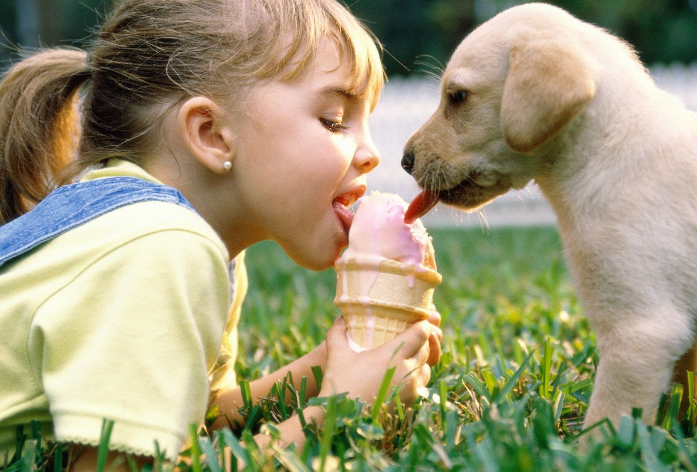

ABOUT US
There are plenty of animal care shelters all across the country harbouring thousands of injured, abandoned or stray animals. One common problem they all face it the lack of helpful volunteers, kind souls willing to adopt the abandoned, and finances required to treat the injured and abandoned animals.
The primary reason for the latter being the lack of awareness among youth and hassel-free means of connecting to the animal shelters or animals in general.
What Does Our Product Do?
Our product idea is centred around the on match based approach as used by popular dating websites/application like tinder.
We are calling our product "CATinder prototype mark 1", where the user would be fed with the pictures of animals from nearby animal care centres where either the animals are open for adoption or need assistance, the user would be able to swipe right the one they like the best and the app will connect them directly with the concerned animal care centre.
On the contrary, there would also be a user upload feature where a user can upload the pictures of any stray or abandoned animal they come across but couldn't help them due to their own dire circumstance. The picture would then be automatically sent to all the nearby animal centre with its respective location.
How does our product impact the society?
Our idea falls within the objective of "Creating social impact" which will eventually drive cultural changes and provide for a better future.A future where nobody feels alone or abandoned for not being cute anymore as it is done usually with pets. We wish to give everyone with a chance to not just start fresh but also help someone raise a soul out of peril.
